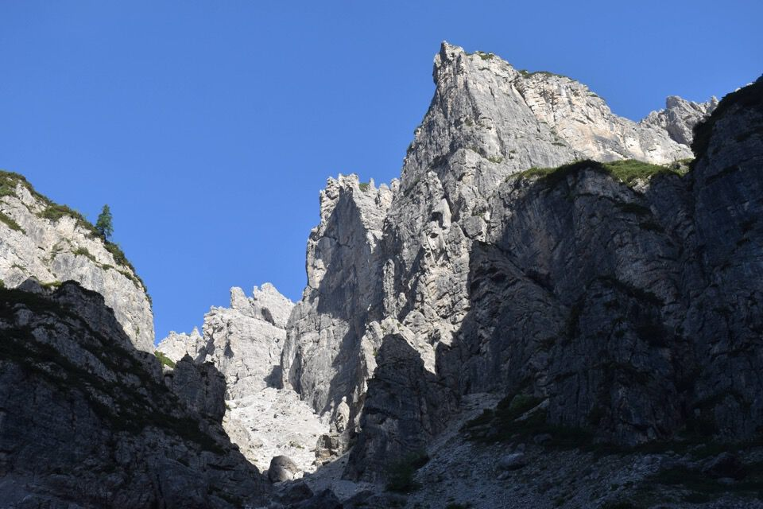
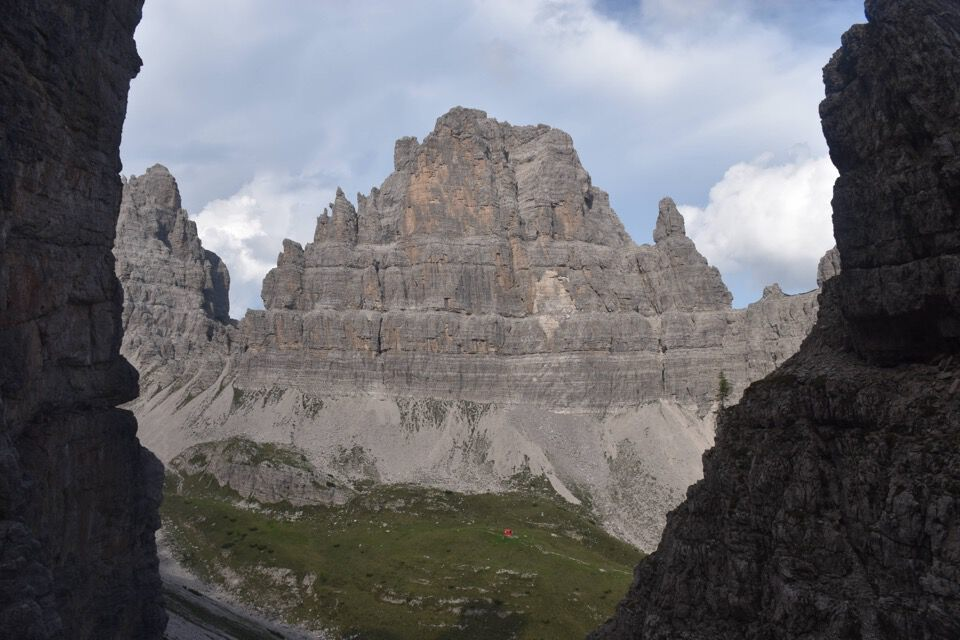

Montagne per me strane, dove i toponimi li inventano gli alpinisti e i camosci non vanno sulle cime: montagne sterili, ma bellissime. Ambiente eccezionale.
Già dal parcheggio del rif. Pordenone vediamo la nostra guglia.
Il ciol de le Corde.
Cima Toro, superba.
Cordate sulla via Zanetti-Parizzi al Campanile di val Montanaia.
Cima Toro con in alto la cengia che ci apprestiamo a percorrere.

Da un forcellino vediamo il Cadore: qui il Cimon del Froppa, che ricordi!
Ecco finalmente la magnifica cengia di Cima Toro.
Tutt'un tratto si gira l'angolo e Punta Pia appare in tutta la sua maestosità.
Dalla cengia bisogna calarsi lungo una parete di 30m di II, che al ritorno bisogna risalire arrampicando.
La vecchia via normale, ovvero l'approccio diretto dal fondovalle a forcella Pia, viene su da qui!
La bella cengetta sabbiosa che cinge a Nord la Punta Pia.
E ora via su.

Primo...
...e secondo tiro di corda.
In vetta: eccezionale.
Verso l'alta val Cadin.
Il nodo del Crodon di Scodovacca.
Il Cridola con le cime Ovest ed Est.
Verso il Cadore e il rif. Padova.
E via giù.
La misteriosa Guglia Jacek.

La luce del pomeriggio è bellissima; staremmo qui tutto il giorno, spaparanzati negli antri della cengia di Cima Toro.
Che luce e che colori magnifici: qui la Croda Cimoliana.
Il Monfalcon di Montanaia, salito due anni fa. Osservo la cresta Sud, dato che quando arrivammo in cima sbucò un tale dall'antecima, salito per l'appunto per la cresta meridionale!
Con questa luce, che le foto catturano malamente, tutto ha una bellezza immensa.